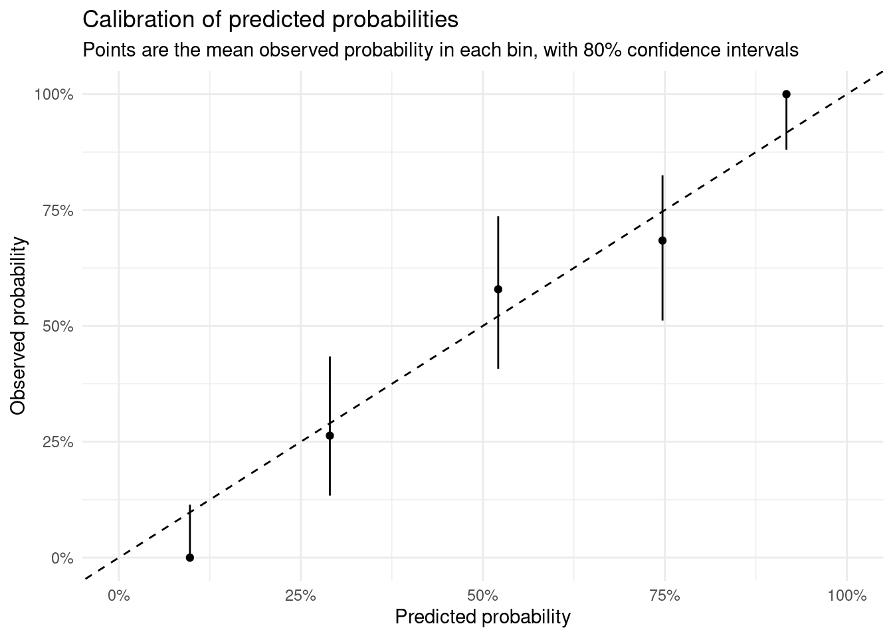
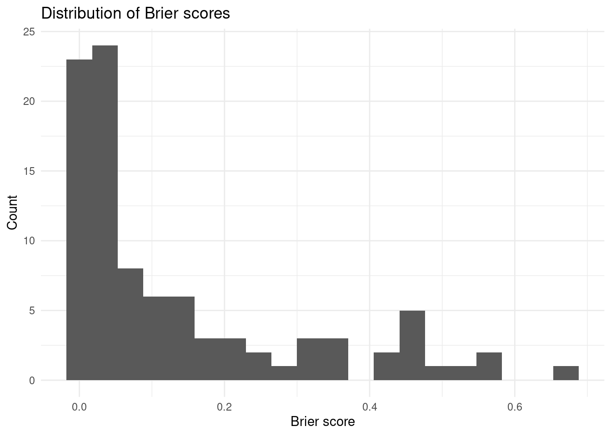

library(downloadthis)
library(dplyr)
library(ggplot2)
library(tidyr)
events = c("M1", "M2", "W1", "W2")tbl_predictions = purrr::map_dfr(
events,
# read in the predictions for each event
~readr::read_csv(
here::here("analyses", paste0("2024-02-16_Pem-", .x, ".csv")),
col_types = readr::cols(
Competitor = readr::col_character(),
.default = readr::col_double()
),
) |>
rename(crew_name = Competitor) |>
# pivot to long format for easier manipulation
pivot_longer(
cols = !c(crew_name),
names_to = "round",
values_to = "prob"
),
.id = "event"
) |>
mutate(round = as.integer(round)) |>
# remove mistakes in output and byes
filter(round < 4, prob < 1)tbl_cond_probs = tbl_predictions |>
# calculate the conditional probability
# p(win round A | compete in round A) = p(win round A) / p(compete in round A)
# NB: p(compete in round A) = 1 for the first round
group_by(crew_name) |>
arrange(round, .by_group = TRUE) |>
mutate(
# probability 0 breaks things, make it up to
# Monte Carlo error
prob = pmax(prob, 1/1000),
cond_prob = prob / c(lead(prob)[-n()], 1),
) |>
ungroup() |>
assertr::assert(assertr::not_na, cond_prob)
tbl_cond_probs |>
DT::datatable()# results contain the round each crew lost, or 0 if they won the event
tbl_results = readr::read_csv(
here::here("data/results/pem_regatta.csv"),
col_types = readr::cols(
crew_name = readr::col_character(),
round = readr::col_integer(),
)
) |>
rename(last_round = round)
tbl_results |>
DT::datatable()tbl_probs_outcomes = left_join(
tbl_cond_probs,
tbl_results,
by = "crew_name"
) |>
filter(
round >= last_round - 1,
# exclude match-ups due to LMBC scratching
crew_name != "Girton W1",
!(crew_name == "Caius W1" & round == 3),
) |>
# set outcome to 1 if the crew progressed past the round,
# 0 if they didn't
mutate(
outcome = (round >= last_round),
brier = (cond_prob - outcome)^2
)Should be a true and false pair for each race, hence overall 50% of outcomes are true:
tbl_probs_outcomes |>
summarise(
mean(outcome),
.by = event
)## # A tibble: 4 × 2
## event `mean(outcome)`
## <chr> <dbl>
## 1 4 0.5
## 2 1 0.5
## 3 3 0.5
## 4 2 0.5tbl_probs_outcomes |>
# bin into five equal size bins based on the conditional probability
# then check the calibration of the bins
mutate(bin = ntile(cond_prob, 5)) |>
summarise(
.by = bin,
x = sum(outcome),
n = n(),
mean_pred = mean(cond_prob),
) |>
# exact 80% confidence intervals for binomial proportions
mutate(
binom::binom.confint(
x, n,
conf.level = 0.8,
methods = "exact"
)
) |>
# plot with binomial confidence intervals
ggplot(aes(x = mean_pred, y = mean)) +
geom_point() +
geom_errorbar(
aes(ymin = lower,
ymax = upper),
width = 0
) +
geom_abline(intercept = 0, slope = 1, linetype = "dashed") +
scale_x_continuous(labels = scales::percent, limits = c(0, 1)) +
scale_y_continuous(labels = scales::percent, limits = c(0, 1)) +
labs(
x = "Predicted probability",
y = "Observed probability",
title = "Calibration of predicted probabilities",
subtitle = "Points are the mean observed probability in each bin, with 80% confidence intervals"
) +
theme_minimal()
Mean brier score is 0.1357385 with a standard deviation of 0.1683743.
tbl_probs_outcomes |>
ggplot(aes(brier)) +
geom_histogram(bins = 20) +
labs(
x = "Brier score",
y = "Count",
title = "Distribution of Brier scores"
) +
theme_minimal()
The table below shows the most surprising results, based on the brier score.
tbl_probs_outcomes |>
# calculate the log odds of the conditional probability
arrange(desc(brier)) |>
DT::datatable()Top 10 are a bit above the rest on how surprising. These matchups were (with winner bolded, grouped by event).
Why did we underestimate Catz? Lets compare their race results to Clare and Emma.
fit_prev = readRDS(here::here("outputs/fit_archive/fit_2024-02-16_1331.rds"))
tbl_data = tar_read(all_data)
tbl_adjustment = fit_prev |>
tidybayes::spread_draws(`r_event:div`[event_div,], `b_releveleventrefEQnewnham_head(.+)`, regex = T) |>
mutate("b_releveleventrefEQnewnham_headnewnham_head" = 0) |>
pivot_longer(
starts_with("b_releveleventrefEQnewnham_head"),
names_prefix = "b_releveleventrefEQnewnham_head",
values_to = "event_adjust",
names_to = "event_adjust_event"
) |>
tidyr::extract(event_div, c("event", "div"), "^(.+)_([0-9]+)$") |>
filter(event == event_adjust_event) |>
replace_na(list(event_adjust = 0)) |>
group_by(event, div) |>
summarise(
adjust_div = mean(`r_event:div`),
adjust_all = mean(`r_event:div` + event_adjust)
)## `summarise()` has grouped output by 'event'. You can override using the
## `.groups` argument.tbl_data |>
add_crew_name() |>
filter(crew_name %in% c("St. Catherine's W1", "Clare W1", "Emmanuel W1")) |>
filter(censor == "none") |>
inner_join(tbl_adjustment, by = c("event", "div")) |>
mutate(div = as.integer(div)) |>
transmute(
event,
div,
crew_name,
raw_time = time,
raw_split = 500 / speed,
adjust_div_time = distance / exp(log(speed) - adjust_div),
adjust_all_split = 500 / exp(log(speed) - adjust_all),
) |>
arrange(event, adjust_all_split) |>
mutate(across(c(raw_time, raw_split, adjust_div_time, adjust_all_split), display_duration)) |>
DT::datatable()So Catz did pretty poorly in Head to Head. They were faster at Fairbairns, but we downweight that, and Newnham Head, but were in a fast division.